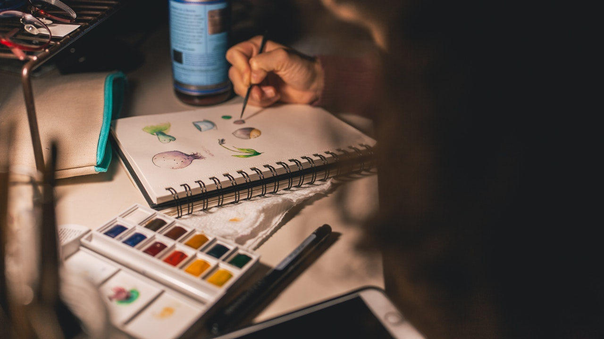

 Adolescente y literatura Aqui tratare de poder llevar acabo una demostracion de mis pasatiempos de manera dinamica, poniendo referencias y videos para que se pueda entender por otra parte, tambien mostrando varias funciones de css